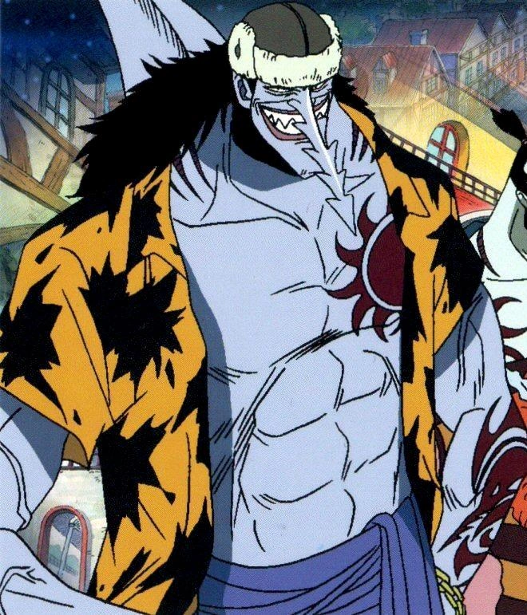
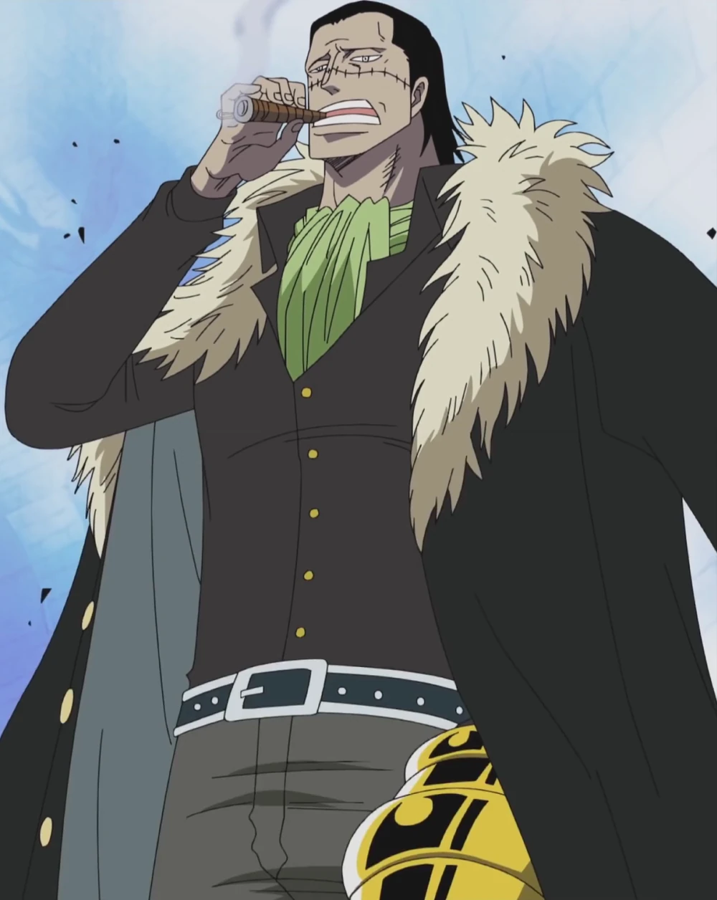
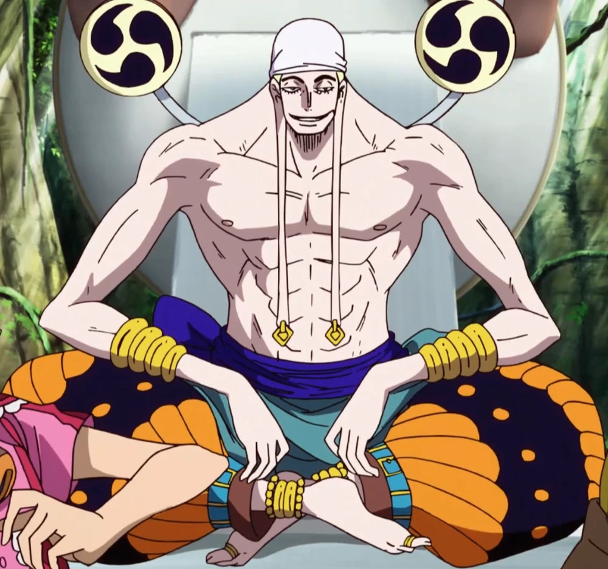
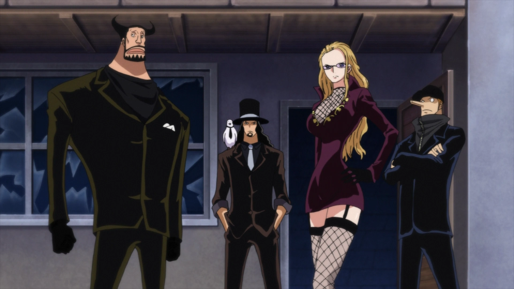
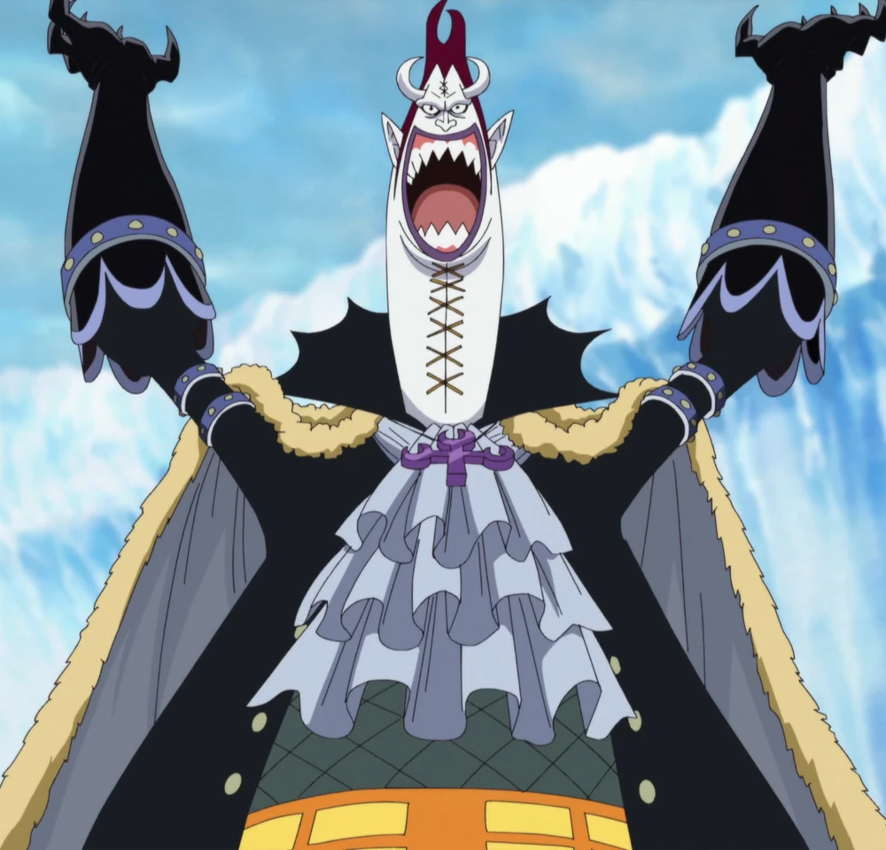
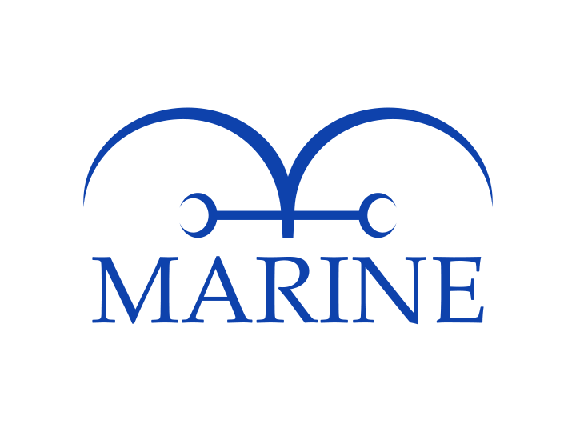
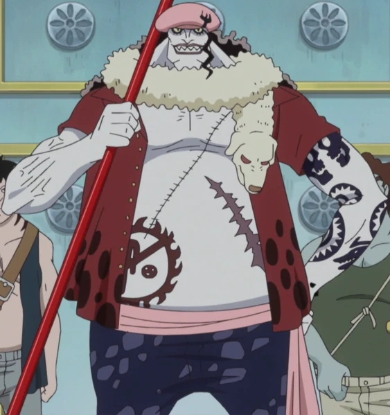
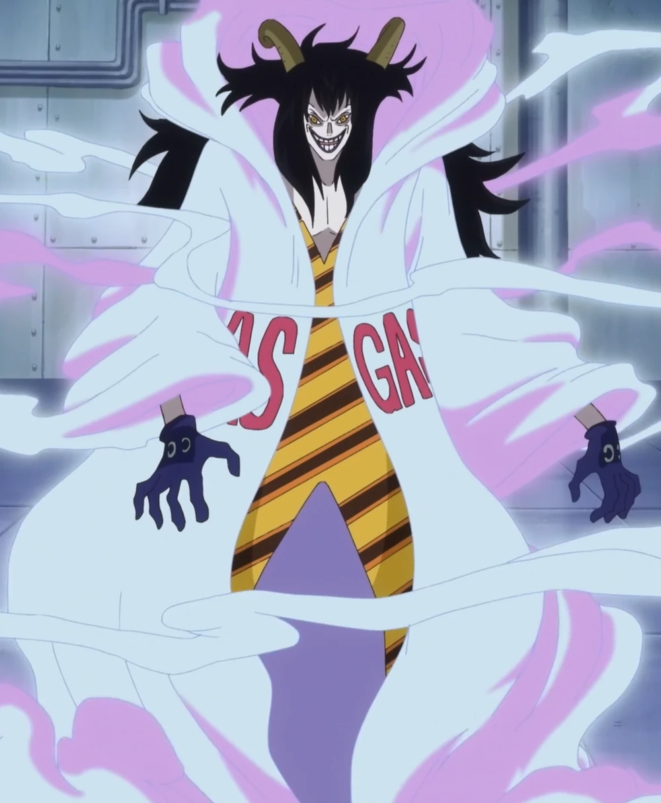
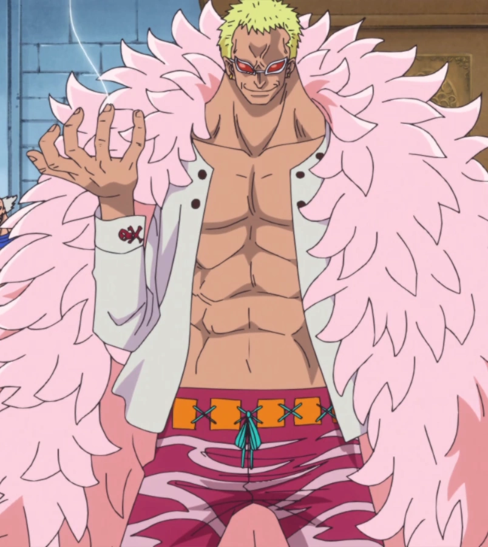
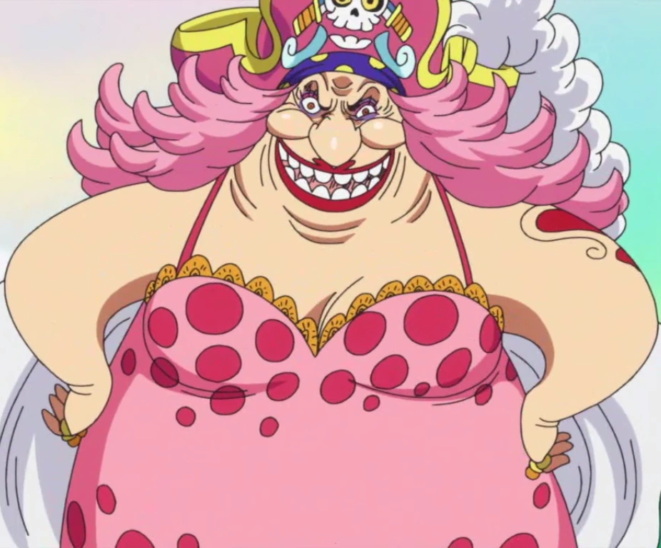

Arlong la Sierra (ノコギリのアーロン Nokogiri no Āron?) es un gyojin tiburón sierra, líder de los Piratas de Arlong y
exintegrante de los Piratas del Sol. Después de ser derrotado, no ha vuelto a aparecer en la serie, y su legado fue
continuado por Hody Jones, quien adoptó una postura aún más sanguinaria que la de Arlong.
Arlong es un gyojin tiburón sierra azul, claro, grande, musculoso, y cuyo rasgo más distintivo es su nariz-sierra. Tiene
el pelo largo, negro brotando en la parte posterior de su cuello, que llega hasta los hombros, por debajo de lo que
parece ser un ushanka marrón, que cubre su cabeza. Tiene una aleta en su nuca, rodeado de su pelo, y las branquias se
encuentran en ambos lados de su cuello. Su tatuaje de Pirata del Sol está en el lado izquierdo de su pecho, mientras que
su propia Jolly Roger está en su antebrazo izquierdo.
Como un Pirata del Sol, llevaba una camisa y un Sombrero fedora. Durante su primera incursión en las Islas Konomi, tenía
una bufanda larga clara que le colgaba de sus hombros, y llevaba un abrigo de color verde oscuro y un par de bermudas de
color beige con un patrón de cadena como en los vinculados con una banda verde alrededor de su cintura. Además, en lugar
de la ushanka que actualmente lleva, tenía un sombrero simple, color gris oscuro en la cabeza.

Sir Crocodile (サー・クロコダイル Sā Kurokodairu?), también conocido como el Rey del Desierto (砂漠の王 Sabaku no Ō?), es un famoso
pirata que fue uno de los Siete Señores de la Guerra del Mar. Además, fue el fundador y expresidente en la sombra de la
organización criminal Baroque Works, donde adoptó el alias de Mr. 0 (ミスター・ゼロ Misutā Zero, "Sr. 0" o "Don Cero"). Sir
Crocodile actuó como el principal antagonista en la saga de Arabasta, donde perdió su título después de que sus planes
para apoderarse del Reino de Arabasta fueran frustrados por los Piratas de Sombrero de Paja.
Después de ser derrotado por Monkey D. Luffy, Crocodile fue encarcelado en el nivel VI de Impel Down. Sin embargo, logró
escapar de la prisión gracias a una alianza informal con Luffy y participó activamente en la Batalla de Marineford.
Después de estos eventos, decidió aventurarse en el Nuevo Mundo y actualmente forma parte de Cross Guild junto al
antiguo Señor de la Guerra del Mar Dracule Mihawk y el Emperador del Mar Buggy.

Enel (エネル, conocido como Ener en España) fue el "Dios" de Skypiea y el antagonista principal durante el arco de Skypiea.
Hace dos años, después de ser derrotado por los Piratas de Sombrero de Paja, él llegó a la Luna y se convirtió en su
nuevo gobernante.
Enel es un hombre alto, musculoso, con el cabello aparentemente corto, rubio claro y tapado con un sencillo pañuelo
blanco que, según ha dicho Oda en un SBS, si llegara a quitárselo, su pelo tendría un estilo con cierto parecido al
afro.[5] tiene las orejas particularmente extrañas, ya que sus lóbulos son extremadamente largos, algo que le da una
apariencia de buda, aunque también puede deberse a que estos se hayan estirado debido a los pesados pendientes de oro
que le cuelgan de la zona. Su nariz, además, posee un diseño bastante curioso, siendo cruzada por varias líneas
horizontales. Sus ojos son de un color azul grisáceo, aunque no es algo que se aprecie demasiado.

El CP9 (シーピーナイン, cuyo nombre oficial es Cipher Pol Number 9 - サイファーポール No.9 Saifā Pōru Nanbā Nain) es una agencia
secreta del Cipher Pol. Actúan como antagonistas principales en el arco de Water 7 y el arco de Enies Lobby.
El CP9 es la única agencia del Cipher Pol que actúa encubierta y su existencia es desconocida para el mundo en general.
Si alguien llega a enterarse de su existencia se aseguran de eliminarlo a toda costa para evitar dejar testigos. Su
principal función es realizar el trabajo sucio del Gobierno, es decir, eliminar a todo aquel que sea un obstáculo para
el Gobierno y su Justicia Absoluta, por lo que los miembros tienen permiso para utilizar la fuerza bruta y asesinar si
lo consideran necesario. Siendo una agencia secreta los miembros solo reciben misiones de suma importancia y
confidenciales, tales como conseguir los planes del arma ancestral Pluton o capturar a Nico Robin, la única
sobreviviente de Ohara.

Gecko Moria (ゲッコ・モリア, Gekko Moria) es el antiguo capitán de los Piratas Gecko y el actual capitán de los Piratas de
Thriller Bark; así como el anterior miembro de los Siete Señores de la Guerra del Mar, quien reside en la isla flotante
Thriller Bark. Su recompensa es de Belly 320.000.000.
Él es el antagonista principal del arco de Thriller Bark y un antagonista secundario durante el arco de Marineford.
Moria es una persona gigantesca, midiendo casi siete metros de altura, siendo el más alto entre los Siete Señores de la
Guerra del Mar. Su tema animal era la de un gecko basado en su nombre, su aspecto general y el cuello de su camisa lo
hacen parecido al cuello de un lagarto. Su diseño general se asemeja a una chalota gigante (similar a una cebolla). Él
tiene dos cuernos que sobresalen de los lados de su frente y puntos corriendo verticalmente desde la parte superior de
su cara y abajo del cuello, lo cual es bastante largo y grueso en comparación con su cuerpo. Sus orejas y dientes son
puntiagudos, mientras que la parte inferior de su cuerpo es relativamente gorda y rechoncha en comparación.

La Marina (海軍 Kaigun) es la fuerza militar marítima al servicio del Gobierno Mundial, encargada de la aplicación de la
ley, la seguridad internacional y las maniobras militares. La Marina es uno de los Tres Grandes Poderes, junto con los
Siete Señores de la Guerra del Mar y los Cuatro Emperadores.
Están presentes en todos los mares del mundo, ya que tienen sedes en todos ellos. Aunque el foco de sus acciones se
encuentra en Grand Line, el mar más peligroso.
A raíz de la Guerra en la Cumbre de Marineford, la base de operaciones del cuartel general de la Marina fue trasladada
al Nuevo Mundo. Debido a su papel y acciones, la Marina es uno de los principales grupos antagónicos en One Piece.

Hody Jones (ホーディ・ジョーンズ Hōdi Jōnzu) es un gyojin gran tiburón blanco, capitán de los Nuevos Piratas Gyojin y
anteriormente un soldado del Ammo Knights. Es un admirador de Arlong y un fuerte creyente de sus ideales. Hody Jones se
presenta como el principal antagonista del arco de la isla Gyojin en One Piece.
Jones tiene una barriga grande, con un tatuaje del diseño de los Nuevos Piratas Gyojin en el lado derecho; así como una
larga cicatriz en la izquierda, y musculosos brazos y piernas. Posee unos ojos amenazantes, con pestañas largas y
distintivas, una boca llena de dientes afilados de forma triangular y una nariz achatada. Tiene el pelo negro largo y
rizado, con un mechón largo colgado en la parte izquierda de su rostro. Su brazo izquierdo está estrechamente tatuado,
con el símbolo de los Piratas de Arlong cerca de la muñeca y varios diseños circulares por encima de ella, que terminan
en dos cráneos en la parte superior del brazo. También tiene algunos picos que sobresalen de su muñeca desnuda, que le
dan la vuelta como una pulsera (posiblemente perforaciones decorativas).
Luce una gorra de vendedor de periódicos rosa, con un tridente poco representado en el lado izquierdo, y una bufanda
aparentemente a partir de un animal como un perro alrededor de su cuello, con la cabeza del animal colgado en el lado
izquierdo de su pecho. Jones es visto con una camisa roja oscura abierta con mangas cortas, cuello ancho y manchas de
color más oscuro en la parte inferior, una banda rosa atada a la cintura, pantalones cortos azul oscuro con un patrón
similar pero con manchas oscuras en un color más claro y sandalias.

Caesar Clown (シーザー クラウン Shīzā Kuraun), también conocido como Master (マスター Masutā, lit. «Maestro») por sus subordinados,
es un antiguo compañero del Dr. Vegapunk. Además, es un experto en armas de destrucción masiva y un demente científico
con una recompensa de Belly300.000.000 por su cabeza. Fue el antagonista principal del arco de Punk Hazard y uno de los
antagonistas centrales de la saga de Dressrosa.
Durante el arco de Dressrosa, Donquixote Doflamingo afirmó que Caesar era uno de sus subordinados directos, lo que
significa que es un miembro oficial de los Piratas Donquixote y, por tanto, estaba protegido por la ley. Tras la derrota
y posterior arresto de Doflamingo, Caesar perdió su protección y su estatus penal volvió a la normalidad. Fue prisionero
de los Piratas de Big Mom después de que los Piratas Fire Tank se lo arrebataran a la alianza de Heart y Sombrero de
Paja. Posteriormente, fue liberado por Capone Bege y formó parte de la rebelión contra los Piratas de Big Mom, tras lo
cual recuperó su corazón y consiguió escapar.
Hace más de veinticuatro años, Caesar Clown formó parte de una organización conocida como MADS, un grupo de
investigación compuesto por científicos de renombre, entre ellos Vegapunk, Vinsmoke Judge y Queen, hasta su disolución.
Después de esto, se unió a la Marina junto a su ex compañero Vegapunk.

Donquixote Doflamingo (ドンキホーテ・ドフラミンゴ Donkihōte Dofuramingo), más conocido por sus epítetos: Yaksha Celestial (天夜叉 Ten
Yasha) en el mundo de la piratería, Joker (ジョーカー Jōkā) en el Inframundo; y el Carisma del Mal (悪のカリスマ Aku no Karisuma);
es un antiguo Señor de la Guerra del Mar, que reinaba en Dressrosa, y un anterior Noble Mundial. Hijo de Donquixote
Homing y hermano mayor de Donquixote Rosinante, es un integrante de la Familia Donquixote, la familia real regente hace
ochocientos años en el país. Doflamingo es el capitán de los Piratas y el menos influyente de los Bajos Fondos detrás
del alias de Joker. Antes de ser parte de los Siete Señores de la Guerra del Mar, el Gobierno Mundial puso por su cabeza
una recompensa de Belly 340.000.000.
Doflamingo fue despojado de su título de rey y expulsado de los Siete Señores de la
Guerra del Mar después de haber sido derrotado por Monkey D. Luffy. Él y casi toda su tripulación fueron detenidos por
el Almirante Fujitora y actualmente se encuentra recluido en el nivel 6 de Impel Down bajo confinamiento solitario. A
pesar de sus recurrentes apariciones en la primera parte de la serie, no se le consideró una amenaza para los Piratas de
Sombrero de Paja, pero tras los hechos en Punk Hazard, se convirtió en el antagonista principal de la Saga de Dressrosa.
A pesar de sus recurrentes apariciones en la primera parte de la serie, no se le consideró una amenaza para los Piratas
de Sombrero de Paja, pero tras los hechos en Punk Hazard, se convirtió en el antagonista principal de la Saga de
Dressrosa.

Charlotte Linlin (シャーロット・リンリン Shārotto Rinrin), más conocida como Big Mom (ビッグ・マム Biggu Mamu, lit. "Gran Mamá"), es la
capitana de los Piratas de Big Mom, matriarca de la familia Charlotte, reina de Totto Land y fue uno de los Cuatro
Emperadores que gobiernan los mares del Nuevo Mundo, hasta que perdió dicha posición tras su derrota a manos de
Trafalgar D. Water Law y Eustass Kid. Al igual que varios piratas del pasado de renombre, fue miembro de los Piratas de
Rocks. Actúa como antagonista principal en el arco de Whole Cake Island, así como antagonista secundaria del arco del
País de Wano.
Big Mom es una enorme y obesa mujer rolliza con el rostro grotesco y arrugado. Debido a su gordura, su mandíbula y su
barbilla apenas sobresalen, concentrándose en una notable papada. Generalmente suele sonreír, mostrando su amplia boca,
de labios gruesos pintados de rojo, dientes grandes y redondos y una larga lengua que a menudo saca. Su pelo le llega
hasta la mitad de la espalda, es de color rosa claro y especialmente rizado. Sus ojos son de color naranja y están
maquillados con sombra de ojos lila y raya rosa. Su nariz tiene forma de pico y sus mejillas son redondas y
salientes. En su brazo izquierdo porta un tatuaje en forma de corazón rojo rodeado por finas líneas negras que
enmarcan sus extremos.

Kaidou de las Bestias (百獣のカイドウ Hyakujū no Kaidō), también conocido como la Criatura más Poderosa (最強の生物 Saikyō no
Seibutsu), es el gobernador general de los Piratas de las Bestias y ejerció como uno de los Cuatro Emperadores hasta que
perdió dicho título cuando fue derrotado durante el asalto a Onigashima. Fue además un aprendiz de los legendarios
Piratas de Rocks durante su juventud. Fue el tercer emperador en ser mencionado y el último en hacer aparición.
La primera referencia que se tiene de él vino de Monkey D. Garp en Water 7 y fue directamente mencionado por Gecko Moria
poco después de tener en su poder la sombra de Monkey D. Luffy. Su posición como uno de los Cuatro Emperadores fue
revelada después de que los Piratas de Sombrero de Paja derrotasen a Moria. Debido a su papel y acciones, es el
antagonista principal del arco del País de Wano así como de la saga del País de Wano y junto a Charlotte Linlin, el
antagonista más notable y destacado de la segunda mitad de la historia.
Kaidou es un oni muy alto de mediana edad, se distingue por tener una constitución anormalmente enorme que se eleva como
un imponente torreón sobre el resto de personas. Su torso es muy ancho y musculoso, y, por consecuencia, tiene unos
brazos muy grandes y bien tonificados. Posee unas piernas desproporcionadas en comparación con su torso, parecen no ser
muy musculosas en comparación con sus brazos aunque sí que tienen una longitud parecida (sus pies son también muy
pequeños en comparación con sus manos).